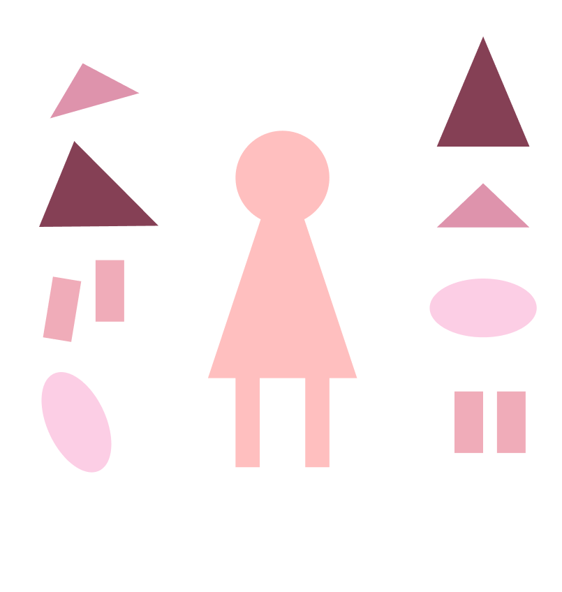

Bōsōzoku (reckless driving group) is a Japanese youth subculture associated with customized motorcycles. The first appearance of these types of biker gangs was in the 1950s. Popularity climbed throughout the 1980s, peaking at an estimated 42,510 members in 1982. Their numbers dropped dramatically in the 2000s, with fewer than 7,297 members in 2012. Bōsōzoku style traditionally involves boilersuits similar to those of manual laborers or leather military jackets with baggy pants, and tall boots. This uniform became known as the tokkō-fuku (特攻服, "special attack clothing") and is often adorned with kanji slogans. Typical accessories to this uniform are hachimaki, surgical masks, and patches displaying the Rising Sun Flag. Bōsōzoku members are known for taking Japanese road bikes and adding modifications such as over-sized fairings, lifted handle bars shifted inwards, large seat backs, extravagant paint jobs, and modified mufflers. Bōsōzoku styles take inspiration from choppers, greasers, and Teddy boys.

bosozoku
what's bosozoku?

.avif)


characteristics


where to shop
Today, it's difficult to find bosozoku clothing because of the declining community. Most of the original garments were created by local craftsmen and were only available to gang members. These original pieces can cost up to $3000! However, here are two brands that have clothes and accessories inspired by the style:


bosozoku documentary
rachel's rating
create an outfit!
